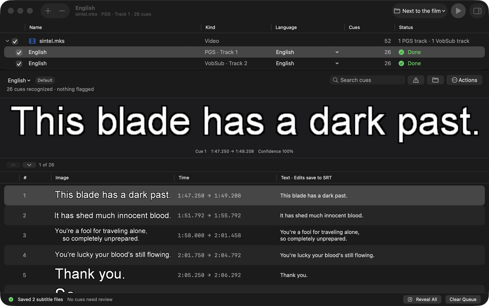
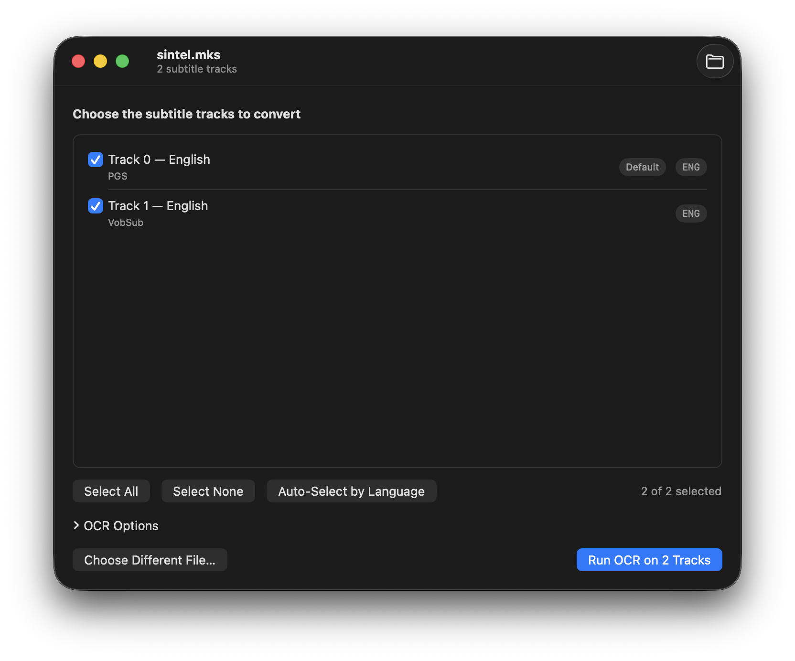

macSubtitleOCR-gui
Drop a Blu-ray rip, get clean .srt files.
A native macOS app that turns PGS and VobSub bitmap subtitles — from MKV, SUP, and SUB/IDX files — into accurate SubRip text using Apple's Vision OCR. Pick exactly the tracks you want; the rest is one click.
v0.2.0 · signed & notarized · MIT licensed · macOS 14+, Apple Silicon

Why this exists
macSubtitleOCR is the best macOS-native PGS-to-SRT engine there is — it uses Apple's Vision framework, so OCR quality beats Tesseract. But the CLI runs OCR on every subtitle track in a file, which is rarely what you want when you're cutting a single language for a release.
This GUI wraps that engine and adds the part you actually need: see every track, pick the ones you want, OCR only those.
| macSubtitleOCR CLI | Subtitle Edit | macSubtitleOCR-gui | |
|---|---|---|---|
| Native macOS app | — | via mono | ✓ |
| Apple Vision OCR | ✓ | — | ✓ |
| Pick specific tracks | — | ✓ | ✓ |
| Drag-and-drop | — | partial | ✓ |
| Signed & notarized | n/a | — | ✓ |
| Free | ✓ | ✓ | ✓ |
What it does
PGS & VobSub OCR
Reads Blu-ray PGS and DVD VobSub bitmap subtitles from .mkv, .mks, .sup, and .sub/.idx files.
Pick exactly what you want
Every track is listed with its language and name — English (SDH), Italian (Commentary), and so on. Multi-select, with filter-by-language for big remuxes.
Apple Vision accuracy
OCR runs through Apple's Vision framework — meaningfully better than Tesseract on small fonts, accents, and italic dialogue.
Clean SRT, sensibly named
Each track lands as MyFilm.eng.srt (or MyFilm.eng.english-sdh.srt) right next to your source — ready to mux.
Preview before you mux
The Done screen shows the first cues of each output so you can sanity-check OCR quality before committing.
Signed, notarized, MIT
The published .dmg is Developer-ID signed and notarized by Apple — no Gatekeeper warnings. Fully open source.
How it works
Four phases — Drop, Tracks, Run, Done. No configuration.
- Drop a file. Drag a
.mkv/.sup/.sub/.idxonto the window (or ⌘O). - Pick tracks. The app probes for PGS / VobSub tracks and shows them with codec, language, and name. SDH / Commentary / Sing-Along variants are clearly labeled.
- Run OCR. Tick the tracks you want, tweak language or invert options if needed, hit Run. Live progress, cancellable.
- Get SRTs. Each track is written as its own
.srtnext to your source, with a preview of the first cues and one-click reveal in Finder.

Download & install
Two ways in. The signed .dmg is the easy path.
Option 1 — download the signed .dmg. Grab the latest release, mount it, drag the app to /Applications. It's signed with a Developer ID and notarized by Apple, so it opens with no Gatekeeper warning.
Option 2 — build from source:
$ git clone --recurse-submodules https://github.com/jeffalldridge/macSubtitleOCR-gui
$ cd macSubtitleOCR-gui
$ brew install mkvtoolnix
$ make app
$ open build/macSubtitleOCR-gui.appRequirements: macOS 14 (Sonoma) or newer, Apple Silicon, and MKVToolNix (brew install mkvtoolnix) — used at runtime to read and extract MKV tracks. The app shows a one-tap install card if it's missing.
FAQ
How do I convert PGS subtitles to SRT on a Mac?
Drop an MKV or SUP file onto macSubtitleOCR-gui, pick the PGS track you want, and click Run OCR. Apple's Vision framework recognizes the bitmap subtitles and writes a clean SRT next to your source file — ready to mux into an MP4 with Subler or your tool of choice.
Does it handle VobSub (.sub / .idx) subtitles?
Yes. It reads VobSub tracks from MKV files as well as standalone .sub/.idx pairs, and OCRs them to SRT the same way it handles Blu-ray PGS.
Is this a free Subtitle Edit alternative for macOS?
It's free and MIT-licensed. Subtitle Edit is a far broader editor — conversion, timing, the works. macSubtitleOCR-gui is intentionally narrower: PGS / VobSub bitmap subtitles in, clean SRT out, with native Apple Vision OCR. If you mostly need accurate bitmap-to-text on a Mac, this is purpose-built for that.
Why Apple Vision instead of Tesseract?
Apple's Vision framework consistently produces better OCR for bitmap subtitles than Tesseract — especially on the small letter-shape edge cases (l vs I, accented characters, italic dialogue). The upstream macSubtitleOCR project has benchmarks; Vision wins.
Does it work with .m2ts Blu-ray streams?
Not directly. Demux to .mkv first with mkvmerge, or rip the disc with MakeMKV — both produce MKVs with the original PGS streams intact, which the app reads natively.
Can I run it on an Intel Mac?
Build from source — make app works on Intel. The published .dmg is arm64-only for v0.1; a universal build is on the backlog.
Why does it need MKVToolNix?
mkvmerge -J lists subtitle tracks in a parseable form, and mkvextract pulls just the chosen track so the app doesn't re-OCR the whole file. MKVToolNix isn't bundled because it's GPL-2.0+ and this app ships MIT — it's a 30-second one-time brew install mkvtoolnix.